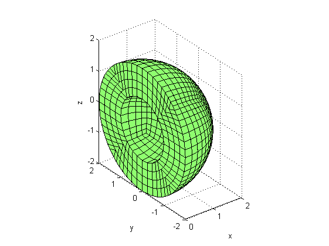
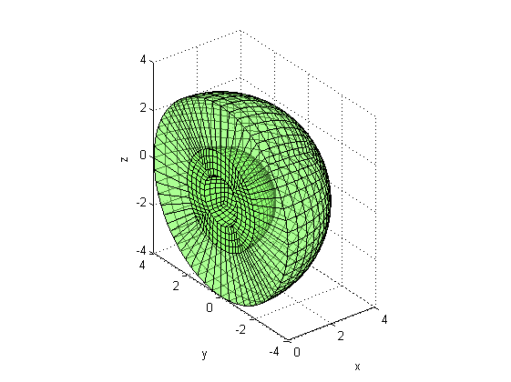
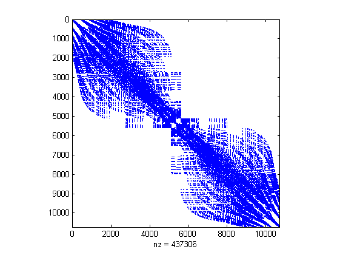
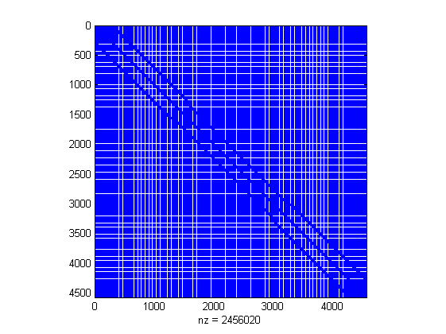
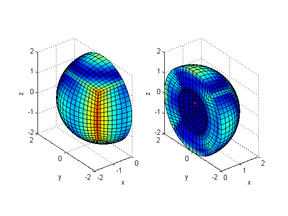
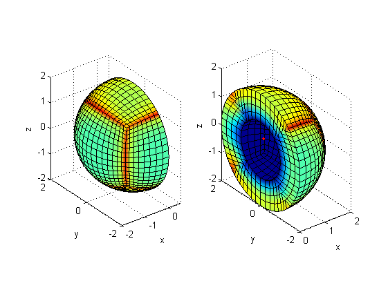

Comparison of FE+IE and FE+BE for a transparent geometry
This demo shows a comparison of solutions based on FE+IE method and coupled FE+BE method for a transparent geomtetry.
Contents
Definition of the problem and model generation
Firstly, acoustical and excitation parameters are defined.
rhoair = 1.225; % mass density of air cair = 343.0; % sound velocity in air psrc = 1; % source amplitude x0 = [0.5, 0.5, 0]; % source location f = 100; % solution frequency
Then geometry parameters are set.
R = 1; % radius of computational domain r0 = 1; % inner radius of sphere dr = r0/4; % element size
Creation of the mesh.
model = create_sphere(R+r0,ceil((R+r0)/dr)); % create a sphere outsel = ['R > ',num2str(r0-dr/10)]; [outn,oute] = mesh_select(model,outsel,'ind'); % select outer part model.Nodes = model.Nodes(outn,:); model.Elements = model.Elements(oute,:); model.Elements = drop_IDs(model); model.Nodes(:,1) = (1:size(model.Nodes,1)).'; % renunber nodes model.Materials = [ 1 1 rhoair cair 0 0]; % assign materials
Plotting the model. The model will be cut in the y-z plane to see the inner nodes.
plot_mesh(mesh_section(model,[-dr/100 -inf -inf;inf inf inf])); view(3);
Extend the model with infinite elements
Get the outer boundary of the sphere.
boundary = get_boundary(model); b_sel = ['R > ',num2str(r0+R-dr/10)]; [bn_ind,be_ind] = mesh_select(boundary,b_sel,'ind'); boundary.Nodes = boundary.Nodes(bn_ind,:); boundary.Elements = boundary.Elements(be_ind,:);
The mesh for the infinite elements will be generated as a projection of the boundary surface. This is performed using function project_ie_mesh. The centre of the sphere will be used as projection point.
P = 5;
ie_mesh = project_ie_mesh(boundary,P,'point',[0 0 0]);
ie_mesh.Elements(:,4) = 2;
ie_mesh.Properties(2,1:6) = [2,2,P,1,0,0];
ie_model = join_meshes(model,ie_mesh);
ie_model = merge_coincident_nodes(ie_model,1e-5);
Plot the extended model
plot_mesh(mesh_section(ie_mesh,[-dr/100 -inf -inf;inf inf inf])); alpha .5;
plot_mesh(mesh_section(model,[-dr/100 -inf -inf;inf inf inf])); view(3);
 Prepare solution computation
Select nodes for solution and excitation
e_sel = ['R < ',num2str(r0+dr/3)]; e_ie_ind = mesh_select(ie_model,e_sel,'ind'); % excitation nodes (FE/IE) e_fb_ind = mesh_select(model, e_sel,'ind'); % excitation nodes (FE/BE) s_sel = ['R > ',num2str(r0+2*dr/3)]; s_ie_ind = mesh_select(ie_model,s_sel,'ind'); % solution nodes (FE/IE) s_fb_ind = mesh_select(model, s_sel,'ind'); % solution nodes (FE/BE) m_sel = ['(R < ',num2str(r0+R-dr/10),') & (R >', num2str(r0+dr/10),')']; m_fb_ind = mesh_select(model,m_sel,'ind'); % inside nodes fe_sel = ['R < ',num2str(r0+R+dr/3)]; fe_ind = mesh_select(ie_model,fe_sel,'ind'); % select FE nodes
Determine analytical solution
rNod_ie = sqrt(dot(ie_model.Nodes(:,2:4)-repmat(x0,size(ie_model.Nodes,1),1),... ie_model.Nodes(:,2:4)-repmat(x0,size(ie_model.Nodes,1),1),2)); rNod_fb = sqrt(dot(model.Nodes(:,2:4)-repmat(x0,size(model.Nodes,1),1),... model.Nodes(:,2:4)-repmat(x0,size(model.Nodes,1),1),2)); p_ie = zeros(size(ie_model.Nodes,1),1); p_fb = zeros(size(model.Nodes,1),1); p_an_ie = psrc*exp(-1i*(2*pi*f/cair)*rNod_ie)./(rNod_ie); p_an_fb = psrc*exp(-1i*(2*pi*f/cair)*rNod_fb)./(rNod_fb);
Assembly of system matrices
System matrices are assembled for both methods. For the infinite element method mass (MIE), stiffness (KIE) and damping (CIE) matrices of the extended model are generated, which are frequency independent sparse matrices. The coupled FE+BE method requires the mass (MFB) and stiffness (KFB) matrices of the FE model, and H and G matrices of the boundary model to be computed. The excitation matrix (QFB) is also assembled.
Then the system matrices are united. In the FE/BE case the FE system matrix is extended with the coupling matrix determined by the BEM.
disp('Assembling FEM+IEM matrices:');tic; [MIE, KIE, CIE, DOF] = model_mk(ie_model); SIE = KIE + 1i*2*pi*f*CIE - (2*pi*f)^2*MIE;toc; % FE/IE system matrix; disp('Assembling FEM+BEM matrices:');tic; [MFB, KFB] = model_mk(model); [QFB, ADOF] = model_a(get_boundary(model)); [H,G] = bemHG(boundary,2*pi*f/cair,'lin'); SFB = KFB - (2*pi*f)^2*MFB; % FE/BE system matrix SFB([m_fb_ind;bn_ind],bn_ind) = SFB([m_fb_ind;bn_ind],bn_ind) - ... 1/rhoair*QFB([m_fb_ind;bn_ind],bn_ind)*(G\H);toc;
Assembling FEM+IEM matrices: Elapsed time is 29.140335 seconds. Assembling FEM+BEM matrices: Elapsed time is 434.191816 seconds.
Check out the system matrices FE/IE system matrix
spy(SIE);
FE/BE system matrix
spy(SFB);
Calculation of the solution
Creating the excitation vector
eDOF = ismember(DOF,ie_model.Nodes(e_ie_ind,1)); % DOF indexing
sDOF = ismember(DOF,ie_model.Nodes(s_ie_ind,1));
DOFe = e_ie_ind(ismember(ie_model.Nodes(e_ie_ind,1),DOF));
DOFs = s_ie_ind(ismember(ie_model.Nodes(s_ie_ind,1),DOF));
p_ie(DOFe) = p_an_ie(DOFe);
p_fb(e_fb_ind) = p_an_fb(e_fb_ind);
Solution by both models
disp('Solution with infinite elements:');tic; p_ie(DOFs) = -SIE(sDOF,sDOF)\SIE(sDOF,eDOF)*p_ie(DOFe);toc; disp('Solution with coupled model:');tic; p_fb(s_fb_ind) = -SFB(s_fb_ind,s_fb_ind)\SFB(s_fb_ind,e_fb_ind)*p_fb(e_fb_ind); toc;
Solution with infinite elements: Elapsed time is 84.885445 seconds. Solution with coupled model: Elapsed time is 313.693368 seconds.
Error analysis and displaying results
Calculate near field normal error
eni = norm(p_ie(fe_ind)-p_an_ie(fe_ind))/norm(p_an_ie(fe_ind)); enb = norm(p_fb-p_an_fb)/norm(p_an_fb); maxei = max(abs(p_ie(fe_ind)-p_an_ie(fe_ind))./abs(p_an_ie(fe_ind))); maxeb = max(abs(p_fb-p_an_fb)./abs(p_an_fb)); maxe = max([maxei,maxeb]); disp(['Relative L2 norm of IE/FE solution: ',num2str(eni)]); disp(['Relative L2 norm of FE/BE solution: ',num2str(enb)]);
Relative L2 norm of IE/FE solution: 0.010773 Relative L2 norm of FE/BE solution: 0.017174
Plot the IE/FE solution
[plot_nind,plot_eind] = mesh_select(ie_model,fe_sel,'ind'); plot_model = ie_model; plot_model.Nodes = plot_model.Nodes(plot_nind,:); plot_model.Elements = plot_model.Elements(plot_eind,:); subplot(121); plot_mesh(mesh_section(plot_model,[-inf -inf -inf;dr/100 inf inf]),... abs(p_ie(fe_ind)-p_an_ie(fe_ind))./abs(p_an_ie(fe_ind))); hold on;plot3(x0(1),x0(2),x0(3),'r.');hold off; view(3);caxis([0 maxe]); subplot(122); plot_mesh(mesh_section(plot_model,[-dr/100 -inf -inf;inf inf inf]),... abs(p_ie(fe_ind)-p_an_ie(fe_ind))./abs(p_an_ie(fe_ind))); hold on;plot3(x0(1),x0(2),x0(3),'r.');hold off; view(3);caxis([0 maxe]);
Plot the FE/BE solution
subplot(121); plot_mesh(mesh_section(model,[-inf -inf -inf;dr/100 inf inf]),... abs(p_fb-p_an_fb)./abs(p_an_fb)); hold on;plot3(x0(1),x0(2),x0(3),'r.');hold off; view(3);caxis([0 maxe]); subplot(122); plot_mesh(mesh_section(model,[-dr/100 -inf -inf;inf inf inf]),... abs(p_fb-p_an_fb)./abs(p_an_fb)); hold on;plot3(x0(1),x0(2),x0(3),'r.');hold off; view(3);caxis([0 maxe]);